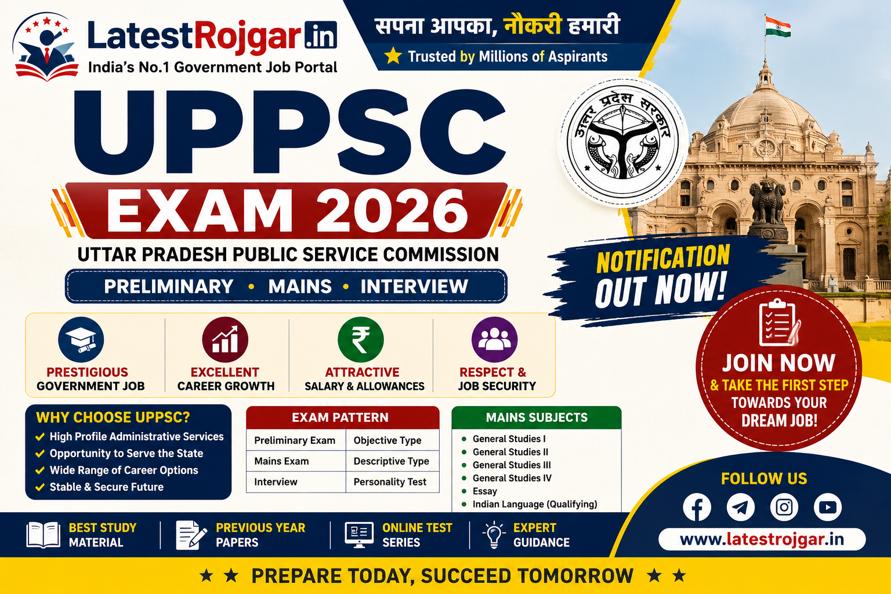

India's No.1 Government Job Portal
Uttar Pradesh Subordinate Services Selection Commission (UPSSSC) has released multiple recruitment notifications for various Group C government posts in Uttar Pradesh. Candidates having valid UPSSSC PET score can apply online for these vacancies.
UPSSSC is a government recruitment organization responsible for conducting recruitment examinations for various Group C posts in Uttar Pradesh. Every year UPSSSC releases vacancies for Lekhpal, Junior Assistant, Forest Guard, Stenographer, VDO, Clerk and many other posts.
| Event | Date |
|---|---|
| Notification Release | 25 May 2026 |
| Apply Online Start | 26 May 2026 |
| Last Date To Apply | 30 June 2026 |
| Fee Payment Last Date | 30 June 2026 |
| Correction Last Date | 05 July 2026 |
| Category | Fee |
|---|---|
| General / OBC / EWS | ₹25 |
| SC / ST | ₹25 |
| PwD | ₹25 |
| Post Name | Total Posts |
|---|---|
| Various Group C Posts | 4500+ (Expected) |
Minimum Age : 21 Years
Maximum Age : 40 Years
Age Relaxation as per UP Government Rules.
Age calculated as on 1 July 2026 Age relaxation as per UP Government rules
| Post | Salary |
|---|---|
| Group C Posts | ₹25,000 – ₹45,000 Per Month |
UPSSSC PET is a Preliminary Eligibility Test for Group C recruitment.
The salary ranges between ₹25,000 to ₹45,000.
10th, 12th and graduate candidates with PET score can apply.

Check more government jobs on Latest Jobs, Admit Card, and Results.